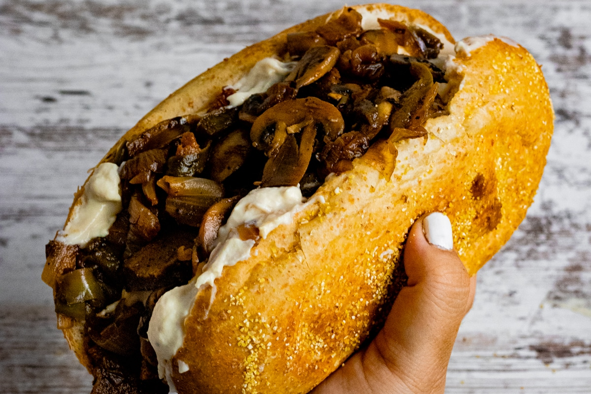

BrieSteak (Cheesesteak with Brie)

Ingredients:
- Roll
- Ny Strip Steak
- Brie
- Mushrooms
- Arugula
- White Onion
- Green Peppers
- Mayo
- Horseradish
- Balsamic Vinegar
- Olive Oil
- Salt
- Black Pepper
- Garlic Powder
Directions:
- Heat a cast iron pan with olive oil.
- Slice the steak into thin pieces against the grain. Season with salt, black pepper, and garlic powder.
- Slice the mushrooms and onion.
- Cook the mushrooms until they begin to release steam. Then add the onions and continue to cook until the onions
are slightly blonde and the mushrooms are golden brown. Season with salt and black pepper.
- Remove the vegetables from the pan and add more olive oil if necessary.
- Add the steak to the pan and turn the heat to high.
- Cook until a crust forms on the steak, then roughly chop the steak using the side of the spatula.
- Slice the roll in half and toast it.
- Mix the mayo and Horseradish
- Toss the arugula with the balsamic vinegar.
- Slice the brie and place on the base of the roll.
- Top with steak and mushrooms, then the horseradish mayo.
- Place under the broiler for 5 minutes
- Add the dressed arugula.
- Top with the other half of the roll and enjoy.